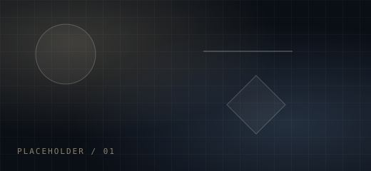
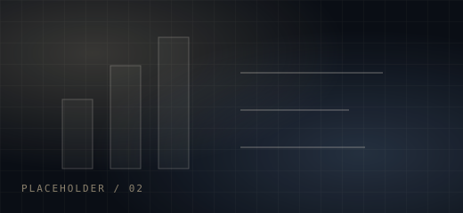
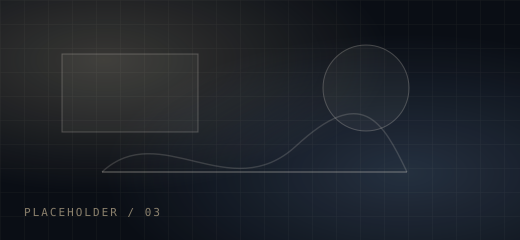

Signal / 001
I work at the intersection of human behaviour, evidence, and decision-making.
Researcher and analyst focused on quantitative insight, behavioural science, data-led storytelling, and sharper strategic decisions.
Work / 002

01
Behavioural research
Implicit methods, survey design, segmentation, decision diagnostics. Open case study →
02
Data and analysis
Quantitative evidence, Python workflows, models, and structured insight. Open case study →
03
Strategy and story
Turning noisy findings into clear choices, narratives, and action. Open case study →Contact / 003